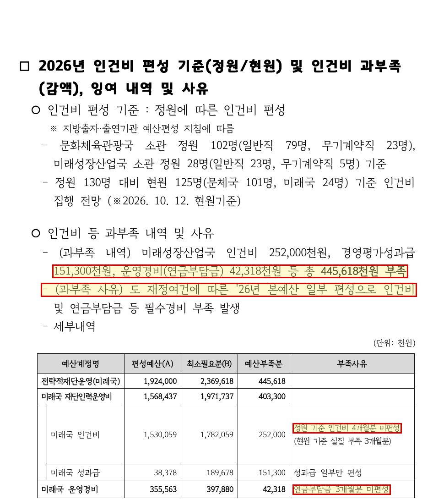
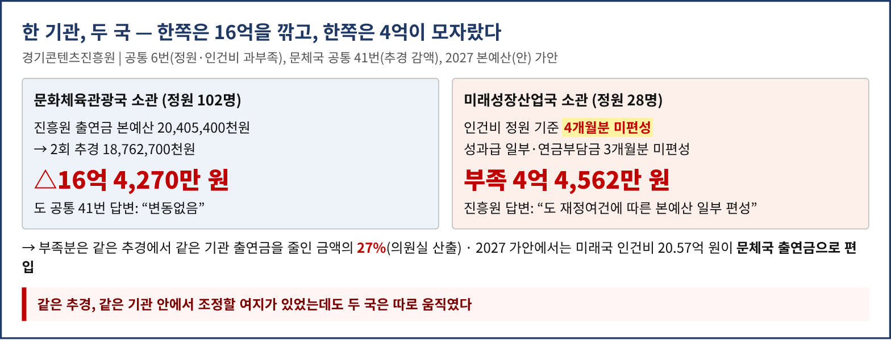
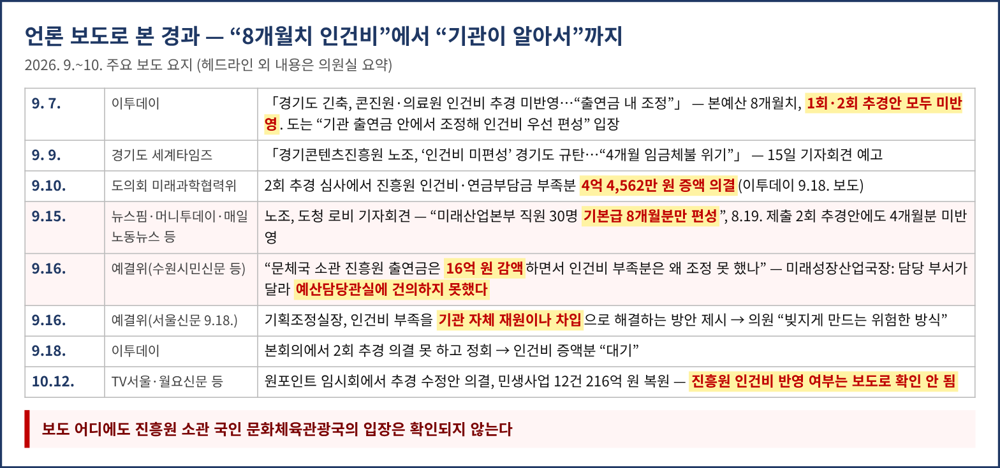
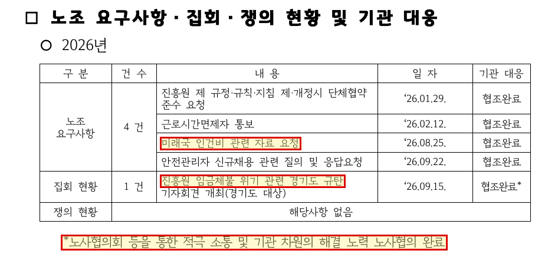
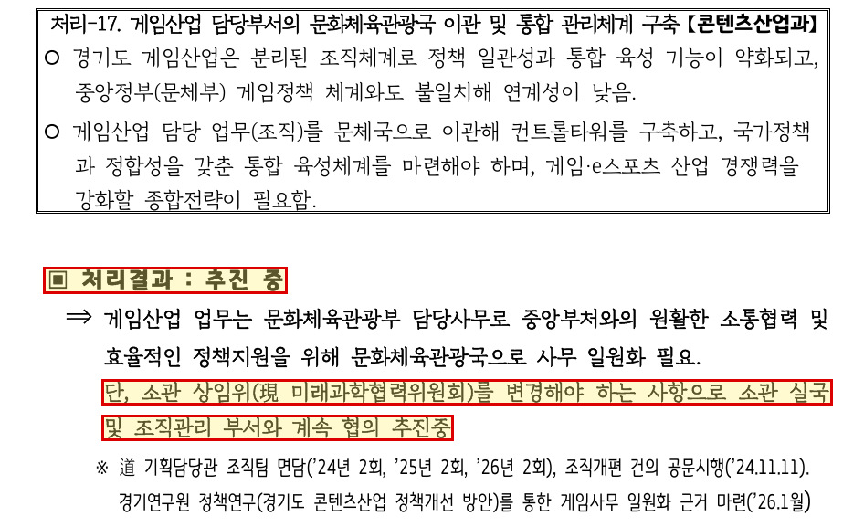
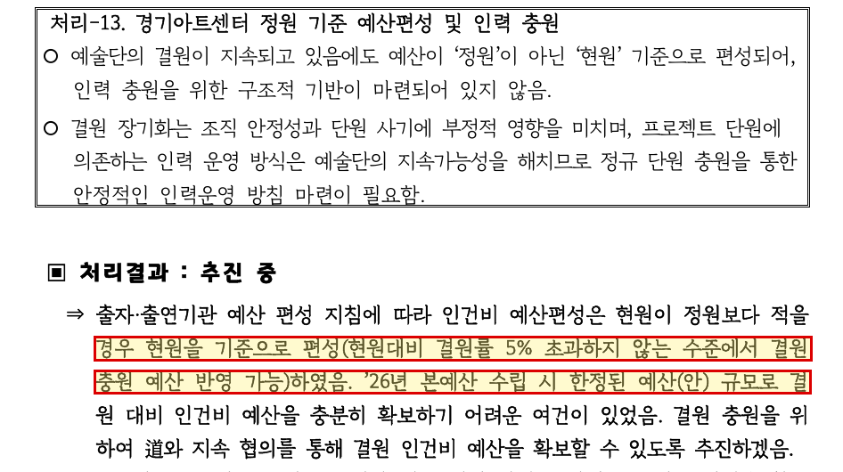

2026년 행정사무감사 질의서 (발언용 · 5분 · 일괄질의) — 종합감사
일은 12개월, 월급은 8개월
— 경기콘텐츠진흥원 인건비 4억 4,562만 원 미편성과 주무국의 관리·감독 책임
문화체육관광위원회 황은화 위원(더불어민주당, 안산7) → 문화체육관광국장
| ① 무엇이 모자랐나 | 진흥원 정원 130명 중 미래성장산업국 소관 28명 인건비 정원 기준 4개월분 미편성 + 성과급·연금부담금 → 445,618천원 부족 · 사유 “도 재정여건에 따른 본예산 일부 편성” · 진흥원 스스로 “인건비는 지침에 따라 정원 기준 편성”이라고 적음 |
|---|---|
| ② 주무국은 무엇을 했나 | 같은 추경에서 문체국은 진흥원 출연금 16억 4,270만 원 감액(의회엔 “변동없음”) — 부족분은 그 27% · 예결위: 미래국장 “담당 부서가 달라 건의 못 했다”, 기조실 “자체 재원·차입” · 노조 자료요청(8.25.)→성명(9.2.)→도청 기자회견(9.15.), 진흥원 답변은 “협조완료” 한 줄 |
| ③ 내년에도 되풀이될 구조 | 2025 행감 지적 게임 업무 문체국 일원화 “추진 중” · 2027 가안: 업무 이관 없이 미래국 인건비 20.57억 원만 문체국 출연금에 편입 → 내년부터 이 직원들 월급은 문체국 책임 · 아트센터 “현원 기준 편성”도 “추진 중” |
| 법적 근거 | 근로기준법 제43조②(매월 1회 이상 일정한 날짜 지급) · 「경기콘텐츠진흥원 설립 및 지원 조례」(소관 콘텐츠산업과) 제5조·제6조(출연금으로 경상경비 충당)·제12조(보고 및 검사) |
| 요구 | 9월 이후 급여 지급 실태·재원 제출 · 2027 인건비 12개월 전액 편성 산출근거 제출 · 산하기관 인건비 분기 점검·조기경보 체계, 게임 이관 협의 문서화 |
※ 의원실 메모 (발언 제외) — 다른 위원 요구자료와 겹치는지·사실관계 점검
|
※ 일괄질의 — 문제 제기 약 4분 30초, 질문 약 30초로 한 번에 마치고 답변은 끝에 듣습니다. [근거 n]은 맨 뒤 「근거자료」 번호로, 읽지 않고 화면에 띄웁니다.
■ 발언 — 도입
국장님, 경기콘텐츠진흥원 직원 월급 문제를 묻겠습니다. 진흥원은 문화체육관광국 소관 기관이고, 설립 조례의 소관 부서도 콘텐츠산업과입니다. [근거 1] 그런데 올해 9월, 진흥원 노동조합이 경기도청 로비에서 “임금체불 위기”를 규탄하는 기자회견을 열었습니다. 도 산하기관 직원들이 도를 상대로 월급을 달라고 나선 겁니다. 세 가지로 말씀드리고, 질문은 끝에 드리겠습니다.
▶ 첫째, 일은 12개월인데 월급은 8개월치였습니다
진흥원 정원 130명 가운데 28명은 미래성장산업국 소관입니다. 올해 이 직원들의 인건비는 정원 기준으로 4개월분이 아예 편성되지 않았습니다. 성과급과 연금부담금까지 합치면 4억 4,562만 원이 모자랍니다. 진흥원은 그 사유를 “도 재정여건에 따른 본예산 일부 편성”이라고 적었습니다. [근거 2]
같은 답변에서 진흥원은 인건비를 예산편성 지침에 따라 정원 기준으로 편성한다고 썼습니다. 그런데 28명분만 8개월에서 멈춘 겁니다. 임금은 매월 정해진 날 지급해야 하는 법적 의무입니다. [근거 1] 예산이 모자라면 사업을 줄일 수는 있어도, 이미 일한 사람의 월급을 뒤로 미룰 수는 없습니다. 노조는 직원 생계뿐 아니라 콘텐츠 기업 지원과 도민 대상 사업에도 차질이 생긴다고 호소했습니다. [근거 4]
▶ 둘째, 그 사이 주무국은 무엇을 했습니까
같은 추경에서 문체국은 진흥원 출연금을 16억 4천만 원 줄였습니다. 그러면서 의회에는 사업량 “변동없음”이라고 보고했습니다. [근거 3] 모자란 4억 5천만 원은 깎은 돈의 27%입니다. 같은 기관, 같은 추경 안에서 조정할 여지가 있었습니다.
예결위에서 미래국장은 “담당 부서가 달라 예산담당관실에 건의하지 못했다”고 답했고, 기획조정실은 “기관 자체 재원이나 차입”을 이야기했습니다. [근거 4] 노조는 8월 25일 인건비 자료를 요구했고, 9월 2일 성명을 냈고, 15일 기자회견을 열었습니다. 그런데 진흥원이 의회에 낸 답변은 “협조완료”, “노사협의 완료” 한 줄입니다. [근거 5] 석 달 동안 진흥원의 주무국인 문체국이 무엇을 조정하고 누구와 협의했는지, 제출된 어떤 자료에서도 찾을 수 없었습니다. 결국 부족분을 메우자고 나선 것은 집행부가 아니라 도의회 상임위원회였습니다. [근거 4·8]
▶ 셋째, 이대로면 내년에도 되풀이됩니다
뿌리는 한 기관을 두 국이 나눠 맡는 구조입니다. 작년 행감에서 게임산업 업무를 문체국으로 일원화하라고 요구했는데, 처리 결과는 아직 “추진 중”입니다. [근거 6] 그런데 내년 예산 가안을 보면 업무는 그대로 두고 미래국 인건비 20억 6천만 원만 먼저 문체국 출연금에 들어와 있습니다. [근거 7] 이제 이 직원들 월급은 문체국 책임이 됩니다.
아트센터도 작년에 “정원이 아닌 현원 기준 편성”으로 지적받았고, 역시 “추진 중”입니다. [근거 6] 산하기관 인건비가 모자라는 일이 해마다 되풀이되는데, 미리 알아차리는 장치가 없습니다. 콘텐츠는 사람이 만드는 산업입니다. 일을 맡기면서 월급을 8개월치만 주는 것은 절감이 아니라 책임을 기관에 떠넘기는 겁니다.
■ 일괄 질의
국장님, 세 가지를 묻겠습니다.
① 9월부터 지금까지 미래국 소관 직원 급여는 제날짜에 전액 지급됐습니까? 재원은 무엇이었습니까?
② 문체국은 이 부족을 언제 알았고, 16억 원을 감액할 때 왜 함께 조정하지 않았습니까?
③ 내년에 넘어오는 인건비, 12개월분이 빠짐없이 편성돼 있습니까?
■ 요구사항 · 마무리 (답변 뒤)
하나, 올해 9월부터 12월까지 미래국 소관 직원의 월별 급여 지급일·지급액·재원(추경 반영분, 사업비 전용 여부 포함)과 제2회 추경 최종 반영 내역을 감사 종료 전까지 제출해 주십시오.
둘, 2027년 진흥원 인건비 산출 근거(정원·현원, 편성 개월 수)를 본예산 상임위 심사 전까지 제출하고, 12개월에 못 미치는 편성이 없도록 해 주십시오.
셋, 문체국 소관 산하기관의 인건비 편성·집행을 분기마다 점검하고, 부족이 예상되면 추경 편성 전에 의회에 보고하는 체계를 만들어 주십시오. 게임 업무 이관 협의는 공문과 회의록으로 남겨 주십시오.
산하기관 직원이 도청 로비에서 월급을 달라고 외치는 일은 올해로 끝나야 합니다. 오늘 요구는 결과보고서 시정요구로 끝까지 챙기겠습니다. 이상으로 질의를 마치고 답변을 듣겠습니다.
■ 답변 뒤 보충질의 (예비)
▷ "미래국 소관 인건비라 문체국이 답하기 어렵다" → 진흥원 설립 조례의 소관 부서는 콘텐츠산업과이고, 운영 상황을 보고받고 검사할 권한도 도지사 이름으로 문체국이 행사합니다. 그리고 16억 원 감액은 문체국이 했습니다.
▷ "결국 추경에서 해결됐다(반영된 경우)" → 해결은 상임위와 예결위가 증액해서 된 겁니다. 도 원안에는 1회, 2회 추경 모두 없었습니다. 의회가 막지 않았다면 어떻게 하실 계획이었습니까?
▷ "도 재정이 어려워 불가피했다" → 재정이 어려우면 사업을 줄이는 게 순서입니다. 일한 사람의 월급을 뒤로 미루는 건 순서가 아닙니다. 기조실이 말한 “차입”으로 월급을 주는 게 정상입니까?
■ 참고 · 예상 소요시간
| 구간 | 분량 | 예상 시간 | 비고 |
|---|---|---|---|
| 문제 제기(도입 포함) | 1028음절 | 3분 25초 | 목표 4분 30초 |
| 일괄 질의 ①②③ | 101음절 | 0분 20초 | 목표 30초 |
| 합계 | 1129음절 | 3분 45초 | 분당 300음절 기준 |
근 거 자 료
원문 이미지의 빨간 테두리·노란 음영은 의원실 표시입니다. 비교 카드·보도 카드는 원문 수치와 보도 요지를 옮긴 것이고, 비율·합계는 의원실 산출입니다. 법령은 2026.11.13. 국가법령정보 원문 조회.
근거 1. 법적 근거 — 진흥원은 문체국 소관, 월급은 매월 정해진 날
「경기콘텐츠진흥원 설립 및 지원 조례」(2023.10.11. 전부개정, 소관부서: 콘텐츠산업과)
|
「근로기준법」(시행 2026.10.8.)
|
진흥원 공통 6번 답변 — 인건비 편성 기준(원문)
|
※ 출처: 자치법규정보(경기콘텐츠진흥원 설립 및 지원 조례), 국가법령정보(근로기준법 MST 285279), 경기콘텐츠진흥원 공통 6번
근거 2. 진흥원 답변 — 미래국 소관 인건비 4개월분 미편성, 445,618천원 부족

· 정원 130명 = 문체국 소관 102명 + 미래국 소관 28명, 현원 125명(문체국 101·미래국 24) — 2026.10.12. 기준
· 미래국 인건비 편성 1,530,059 / 최소필요 1,782,059 → 252,000천원 부족(정원 기준 4개월분, 현원 기준 실질 3개월분)
· 성과급 151,300천원(일부만 편성), 연금부담금 42,318천원(3개월분 미편성) — 합계 445,618천원
※ 출처: 경기콘텐츠진흥원 공통 6번 「기관별 정원 및 현원 현황」 p.42 (이오수·김승기·안시현·이지혜·채명신 위원 요구)
근거 3. 한 기관, 두 국 — 한쪽은 16억을 깎고, 한쪽은 4억이 모자랐다

· 문체국 공통 41번: 진흥원 운영 출연금 본예산 20,405,400 → 추경 18,762,700천원(△1,642,700), 사업량 “변동없음”
· 진흥원은 같은 감액으로 행사 취소·홍보 축소·웹툰 청년인턴십 2개월→1개월 등 16개 사업 축소를 보고
· 445,618 ÷ 1,642,700 = 27.1% (의원실 산출)
※ 출처: 문화체육관광국 공통 41번 답변자료(xlsx), 경기콘텐츠진흥원 공통 41번 별도 파일(이진형 위원 요구), 공통 6번
근거 4. 언론 보도 — 8개월치 인건비, “출연금 내 조정”, “건의하지 못했다”

· 노조 요구 3가지(9.15.): ① 산하기관 인건비 정상 편성 ② 부족 4개월분 즉시 추경 반영·교부 ③ 임금체불 위기 재발 방지
· 도 입장(9.7.): 인건비는 “기관별 출연금 내 세출예산 조정을 통해 우선 편성” → 그러나 문체국 출연금 감액과 미래국 인건비 부족을 함께 조정한 흔적은 자료에 없음
· 9.7. 보도 시점에는 “실제 체불이 발생한 단계는 아니다”라고 명시 — 발언은 “체불 위기”로 한정
※ 출처: 이투데이(2026.9.7., 9.18.), 경기도 세계타임즈(9.9., 9.15.), 뉴스핌·머니투데이·매일노동뉴스·중앙이코노미뉴스·THE Biz(9.15.), 수원시민신문·일간경기(9.16. 예결위), 서울신문(9.18.), TV서울·월요신문(10.12.) — 링크는 맨 뒤 「보도 출처」
근거 5. 진흥원 노사관계 답변 — 기자회견까지 열렸는데 “협조완료”

· 8.25. “미래국 인건비 관련 자료 요청” → 9.15. “진흥원 임금체불 위기 관련 경기도 규탄 기자회견” — 기관 대응 모두 “협조완료”
· 각주: “노사협의회 등을 통한 적극 소통 및 기관 차원의 해결 노력 노사협의 완료” — 무엇을 협의해 어떻게 해결했는지 내용 없음
※ 출처: 경기콘텐츠진흥원 공통 45번 「문체국 기관별 노사관계 현황」 p.284 (한규찬 위원 요구)
근거 6. 2025년 행감 지적 — 이원 구조 해소도, 정원 기준 인건비도 “추진 중”


· 처리-17(콘텐츠산업과): 게임산업 업무 문체국 일원화 — “소관 상임위를 변경해야 하는 사항으로 … 계속 협의 추진중”(도 조직팀 면담 ’24~’26년 각 2회)
· 처리-13(아트센터): “현원이 정원보다 적을 경우 현원을 기준으로 편성” … “’26년 본예산 수립 시 한정된 예산(안) 규모로 결원 대비 인건비 예산을 충분히 확보하기 어려운 여건”
· 2025년 진흥원 지적 14건은 모두 “완료” 처리 — 인건비·이원 소관 관련 지적은 없었음
※ 출처: 문체국 공통 1번 별첨 「2025년도 행정사무감사 시정·처리요구 및 건의사항 처리결과」 p.18~19, p.44~45, p.236~250
근거 7. 2027 본예산(안) 가안 — 업무 이관 없이 인건비만 먼저 문체국으로
| 예산과목(콘텐츠산업과) | 2026 예산 | 2027 가안 | 증감 | 가안 사유(원문) |
|---|---|---|---|---|
| 진흥원 인건비 | 6,419,267 | 9,330,433 | +45.4% | 미래국 인건비 포함으로 2,057백만원 증액 |
| 진흥원 경상비 | 1,635,133 | 1,861,567 | +13.8% | 미래국 경상비 포함으로 390백만원 증액 |
| 진흥원 사업비 | 12,351,000 | 4,500,000 | △63.6% | 도 재정 여건 악화에 따른 세출 구조조정 |
· (단위: 천원) 게임 업무 이관은 “양 국 간 공식적인 협의 공문·회의록은 없으나”, 조직개편 “미반영”(문체국 58번, 한규찬 위원 요구) → 일은 미래국, 월급은 문체국
· 2026년 미래국 인건비 최소필요액 1,782,059천원 대비 2027 편입액 2,057백만 원 — 12개월분·인상분이 모두 담겼는지 산출근거로 확인 필요
※ 출처: 「2027년 본예산(안) 일반회계 세출」 가안(10.19. 공개분, 최종본 아님) 콘텐츠산업과, 문체국 요구자료 58번
근거 8. 도가 알 수 있었던 시점들 — 조기경보가 작동하지 않았다
| 시점 | 신호 | 근거 |
|---|---|---|
| 2025.12. | 2026 본예산 확정 — 미래국 소관 인건비 8개월분만 편성, “부족분은 추경으로” 계획 | 경인일보·이투데이 |
| 2026 상반기 | 제1회 추경 — 부족분 미반영 | 이투데이(9.7.) |
| 8.19. | 제2회 추경안 도의회 제출 — 부족분 미반영, 같은 추경에 문체국 소관 진흥원 출연금 감액 | 세계타임즈(9.15.), 공통 41번 |
| 8.25. | 노조, 진흥원에 “미래국 인건비 관련 자료 요청” | 진흥원 공통 45번 |
| 9.2. | 노조 성명 — 경기도 인건비 미편성 비판 | 세계타임즈(9.15.) |
| 9.10. | 미래과학협력위, 4억 4,562만 원 증액 의결 | 이투데이(9.18.) |
| 9.15.~16. | 노조 도청 기자회견 / 예결위 질의(미래국·기조실) | 보도 다수 |
| 10.12. | 추경 수정안 의결 — 진흥원 인건비 반영 여부 확인 필요 | TV서울·월요신문 |
· 본예산 단계부터 “8개월분만 편성”이 예정된 부족이었다 → 예측 가능한 위기를 열 달 동안 두 국 어느 쪽도 의회에 먼저 보고하지 않음
※ 출처: 보도 및 진흥원 공통 41·45번. 1회 추경 시점은 보도 기준
근거 9. 보도 출처
· 경인일보 「도 산하기관 출연금 ‘대폭 감액’」
https://www.kyeongin.com/article/1770509
· 이투데이 「경기도 긴축, 콘진원·의료원 인건비 추경 미반영…“출연금 내 조정”」(2026.9.7.)
https://m.news.nate.com/view/20260907n34615
· 경기도 세계타임즈 「경기콘텐츠진흥원 노조, ‘인건비 미편성’ 경기도 규탄」(2026.9.9.)
http://incheon.thesegye.com/news/view/1065587433447608
· 경기도 세계타임즈 「경콘진 노조, 경기도에 임금체불 위기 해소 촉구」(2026.9.15.)
http://gyeongnam.thesegye.com/news/view/1065594248824844
· 뉴스핌 「경기콘텐츠진흥원 노조, 도청 앞 기자회견…“4개월치 인건비 추경 반영 촉구”」(2026.9.15.)
https://www.newspim.com/news/view/20260915001200
· THE Biz 「경기콘텐츠진흥원 노조, 15일 도청서 ‘임금체불 위기’ 규탄 회견」(2026.9.15.)
http://www.the-biz.co.kr/news/articleView.html?idxno=727854
· 매일노동뉴스 「[체불 위기에 복지 차별까지] 경기도 긴축재정 ‘유탄’ 맞는 노동자들」
https://www.labortoday.co.kr/news/articleView.html?idxno=236792
· 수원시민신문 「유경현 의원, 경기콘텐츠진흥원 임금체불 위기 지적」(예결위 9.16.)
http://urisuwon.com/261684
· 서울신문 「최경순 경기도의원 “출연기관 인건비 부족 알아서 하라는 경기도, 말 안 돼”」(2026.9.18.)
https://m.go.seoul.co.kr/news/2026/09/18/20260918500279
· 이투데이 「경기콘텐츠진흥원, 인건비 8개월치만 편성…4억4562만원 증액도 추경 ‘대기’」(2026.9.18.)
https://www.etoday.co.kr/news/view/2627424
· TV서울 「경기도의회, ‘민생예산 216억 복원’ 추경 수정안 의결」(2026.10.12.)
https://www.tvseoul.kr/news/article.html?no=79378